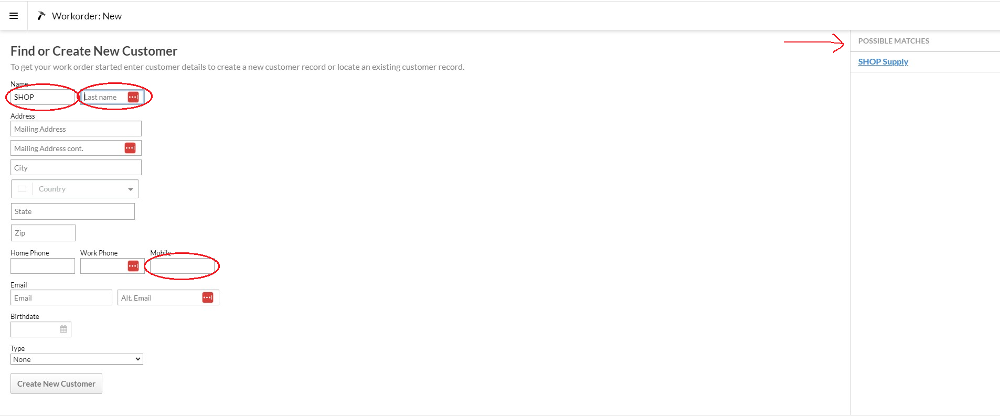

Work Order basics
Creating and attaching a customer
You can create a work order by going to the 'Service' section of the main menu and then clicking 'New Work Order'. Search for the customer's account or create a new customer account if necessary. 
{kind=link}
If you're drawing up an estimate for a customer and you don't have their name yet, there's an 'Estimate' customer account that you can use a placeholder. Make sure that you remove the Estimate account instead of editing the customer account. You can also use the 'SHOP Supply' customer account if appropriate.
Top row buttons
{kind=link}
Print tag will print a copy of the paperwork with all the details on the screen except the internal notes.
Print quote will print a copy of the paperwork without the internal notes or receipt notes field, it will also print out on our letterhead. This version is also what gets sent to the customer if you text/email a copy to them.
Checkout will take you directly from this screen to a sale window and will change the status to 'Completed'.
We don't use the Invoice function
To the right you can either Archive(will remove the work order from most searches) or Delete the work order(Only available if there are no line items entered).
Show chat will bring up the Ikeono text history for this customer.
Status
The Status field denotes what state the repair is in. The following are some notes about the more important and less obvious statuses.
Setting this accurately is very important, repairs set to the wrong status are one of the biggest headaches that the service department deals with.
Open - This is the status that a work order will be set to by default. This denotes that the repair has been approved, that the bike is here, and that there's no reason not to proceed with the repair.
Estimate - An un-approved estimate for service.
Assigned - This is scheduled to be worked on today, and it has been assigned to a mechanic.
Waiting for Customer - We're waiting for the customer to respond before the repair can proceed. This is usually used when we discover additional issues while working on a repair and we're waiting for a callback with approval.
Waiting for parts - This repair is approved and ready to be started on, the only thing preventing us from proceeding are special order parts that haven't arrived.
Needs QC Repair is finished, but needs to go through the quality control check.
Sales leads If a salesperson needs to collect a good deal of notes to help out a customer and wants to store it as a workorder so that they can follow up later. These will generally be ignored by everyone else, don't expect anyone else to look at it or follow up on it automatically.
{kind=link}
Date In/ Due Date
Date in will auto-fill to the date and time that the work-order is created. We want to leave that as it is - we use this field to track when a bike entered the shop to be evaluated.
Due date is when the bike is due. We don't use the time field - repairs are due by the end of the day generally, if it needs to be finished by a specific time it should be marked in the notes.
Hook In/Out
Hook in is where we track the hook downstairs that is occupied by the bike, matching the pink hang tag on the bike. We also sometimes enter 'Kickstand' to denote a bike that we took downstairs or tucked in a corner that's too heavy for a hook, 'Wheel Hooks' for the wheel storage above the back desk, and 'Sales Hooks' for the rows of shop bikes next to the repair bikes.
Hook out is where the service department tracks the amount of labor on the ticket. This is usually a $ and the amount of labor (not including the discounts and rounded to an easy to read number) on the ticket. This is how the service department tracks how much service they have scheduled on a particular day. We also track this number on the calendar by the main service computer, so if you're adding service to the next available appt date, please add it there as well.
Receipt note/internal note
Receipt notes are visible to the customer. We use a browser extension called Text-Blaze that will auto-fill some prompts in the note field, you can right click in the note field and navigate to 'Text Blaze' or use keyboard shortcuts (/wo is the standard one for workorders).
{kind=link}
Bear in mind, Receipt notes are visible to the customer! Internal notes will not print out on a paper copy either, so notes meant to be read by the mechanic doing the work should be entered in the receipt notes field (Best practice would be to also leave a comment on the corresponding line item as well).
Internal notes are where we keep the bulk of information related to a repair, generally so that it doesn't clutter up the customer's receipt with a bunch of procedural chatter. When updating a ticket's internal notes, we want to see the newest updates writted at the top with each update accompanied by your initials and the date.
Line items
You can enter the line items that will appear on the customer's receipt here. It's generally a good idea to include all services that will be performed - receipt/internal notes can often get overlooked by the mechanic.
The buttons can be used as a shortcut to find the more common line items. Hitting them will either open a sub-menu with more buttons or add a specific line item to the work order. Of note - the 'Misc Item'(generally only used for used or take-off parts) and 'Misc Labor' should be avoided and used only as a last resort. Using those two buttons too often will screw up our inventory counts and reporting.
Searching for a work order
From 'Service' in the main menu, the easiest way to find a work order is usually the work order submenu. You can search by customer name or phone number in the search field, or by the work order ID # in the ID field. Make sure that the date range and 'Hide Status' dropdown aren't excluding what your looking for from the results.
{kind=link}
You can also find a list of all their workorders on a customer's account page, in the Work Orders submenu.